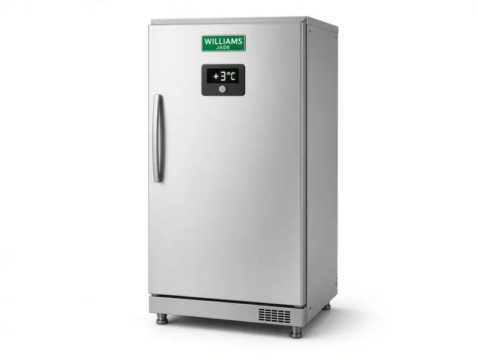

Commercial refrigeration only - 24/7 emergency - 25 mile radius
Williams commercial freezer repair for restaurants, pubs and shops in North London and London. 24/7 emergency. 25 mile radius.

We provide both repair and service / maintenance for Williams commercial freezers. Williams freezers are the default stainless uprights and under-counters in London restaurants. When a Williams freezer warms, frozen protein thaws, ice cream collapses, and an EHO visit becomes a problem. Cold Direct repairs Williams commercial freezers only. We cover North London and a 25 mile radius across London, Hertfordshire and Essex. We do not book domestic house freezers.
Williams freezer service London is working freezer service London on stainless that lives next to a grill. PPM servicing covers condenser flour, door heaters, drains and a probe on product, not the display. A service contract for a restaurant group puts every Williams upright on a round. Servicing before a heatwave stops the high-pressure trip that thaws Saturday ice cream. We still do 24/7 Williams freezer repair. The diary visit is how kitchens keep minus eighteen.
Common Williams freezer faults: iced evaporators after a door left open, a condenser packed with flour, a failed door heater, a noisy fan, water on the floor from a blocked drain, a controller that has lost its set point, or a compressor that will not stay in. We probe air and product temperatures and write them down. That is the record the EHO wants, not a photo of the display.
We quote before we start. A gasket and a defrost may save the weekend. A compressor job is a different conversation. 24/7 emergency Williams freezer repair is for Friday nights in Camden, Islington and the City, and for prep kitchens in Barnet, Tottenham, Edmonton, Walthamstow, Harrow and Watford. Enfield, Finchley, Wood Green, Hackney, Haringey, Stratford, Romford and Ilford sit on the same ring.
Call mobile 07983 759320, freephone 0800 112 3427 or London office 0203 952 4822. Williams is a core commercial brand for us alongside Foster, Polar, True and Hoshizaki. If you also have a Williams fridge on the same site, we can often look at both. See commercial freezer repair North London, freezer repair London, Polar fridge repair and Sub-Zero freezer repair.
Williams cabinets live in hot kitchens. Airflow around the condenser is half the job. We pull the unit if we can, clean it, and test pull-down with a temperature probe. Commercial only. If your freezer is a household chest in a garage, we will say no on the call so you can find a domestic engineer quickly.
Dark green buttons match Williams trade livery without turning the page into a dark theme. Body background stays #FFFFFF.
Williams freezer repair London is one of the most common calls we take. Stainless uprights on a restaurant pass, under-counters under the grill, and remote Williams plants in prep rooms all fail in the same ways: dirt, doors, defrost and then the sealed system. We are commercial only. We use a temperature probe. We cover a 25 mile radius from North London, 24/7. Enfield, Barnet, Camden, Islington, City, Westminster, Harrow, Watford, Tottenham, Edmonton, Walthamstow, Stratford, Romford and Ilford are covered towns. Call 07983 759320, 0800 112 3427 or 0203 952 4822. If the Williams unit is a fridge not a freezer, start on commercial fridge repair North London or fridge repair London. If it is a freezer room, use the freezer room page instead of this cabinet page.
Yes. Commercial Williams freezers in restaurants, pubs, shops and hotels.
Yes. Call the mobile after hours.
Yes. Air and food probe readings are part of the visit.